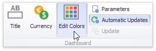
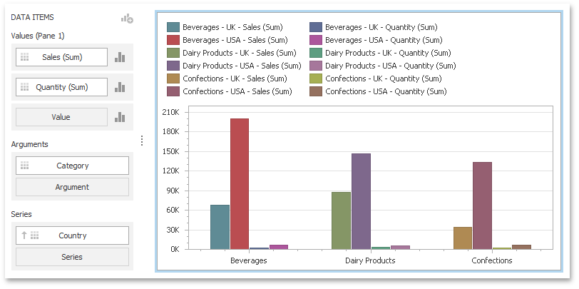
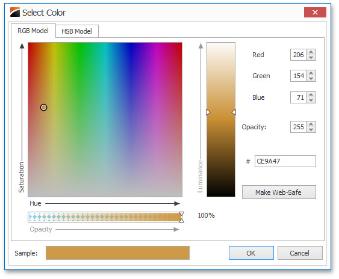
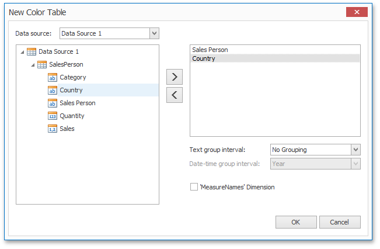

Customizing a Color Scheme
The Dashboard Designer provides the capability to edit colors contained in global and local color schemes. You can select the required color from the default dashboard palette or specify a custom color.
Invoke a Color Scheme Dialog
To edit colors, use the Color Scheme dialog. You can invoke this dialog in the following ways.
To edit colors in a global color scheme, use the Edit Colors button in the Home ribbon tab or the Edit Colors button in the dashboard item's Design tab.


To edit colors in a local color scheme, use the Edit Colors button in the contextual Design ribbon tab.

Lets consider a Chart dashboard item whose dimensions and measures are colored by hue using local colors.

For this dashboard item, the Color Scheme dialog will contain combinations of all dimension values and a specific measure.

In this dialog, you can perform the following actions.
- Edit automatically assigned colors or specify new colors.
- Add new values to a color table.
- Add new color tables containing values whose colors are not yet assigned.
Edit Colors
You can customize automatically assigned colors in several ways.
To retain the automatically assigned color for the selected value, right-click the required value in the Value column and select Retain this color.

This reserves the current palette color for the selected value.
You can select another palette color by clicking the required cell in the Color column.

To specify a custom color, click More Colors... and pick any color using the RGB or HSB color model in the invoked Select Color dialog.

You can reset the customized color for the selected value using the Reset menu item.

Add a New Value
The Color Scheme dialog allows you adding a new value with the specified color to the selected color table. To do this, click the New Value... button.

In the invoked New Value dialog, specify the dimension values, add the required measures and click OK. This creates a new value whose color can be specified as described in Edit Colors.
You can remove manually added values using the Remove context menu item.

Add a New Color Table
The Color Scheme dialog also allows you to add a new color table containing values whose colors are not yet assigned. To do this, click New Color Table... button.

In the invoked dialog, specify the data source, add the required dimensions and enable the 'MeasureNames' Dimension check-box if you need to add measures to a color table.
Click OK to add the color table to a color scheme. Then, you can add values to this table (see Add a New Value) and specify its colors (see Edit Colors).